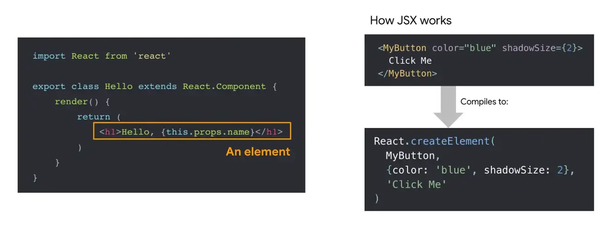
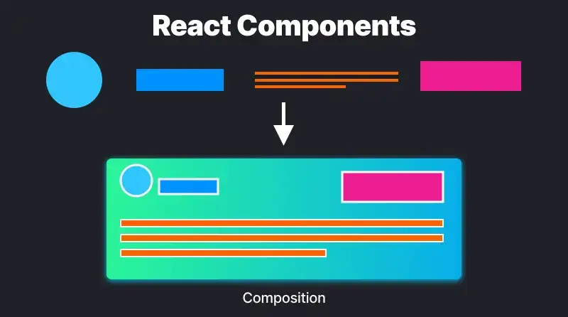
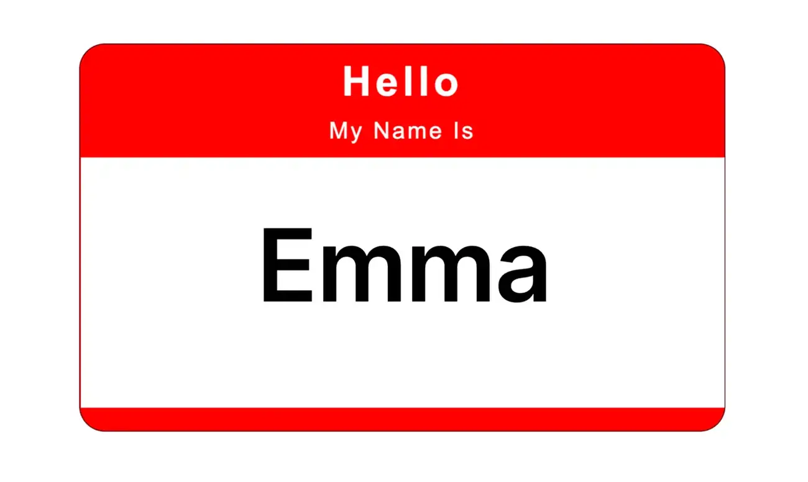
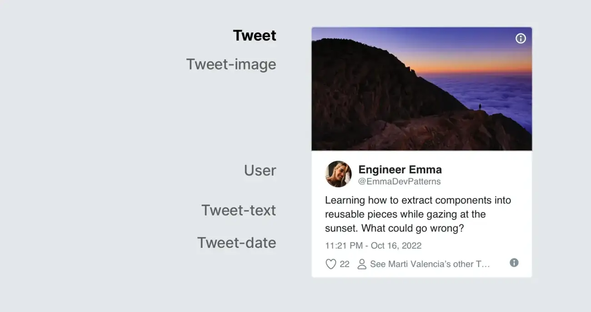
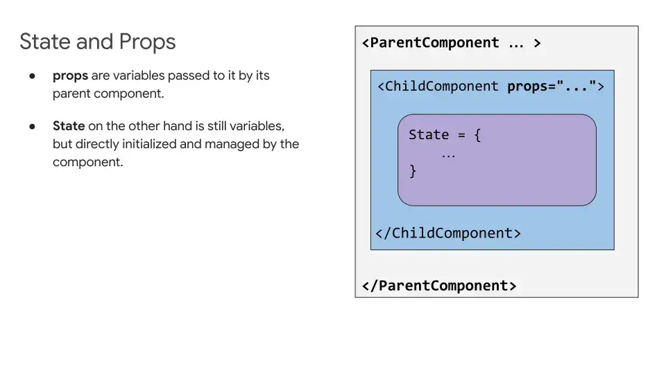
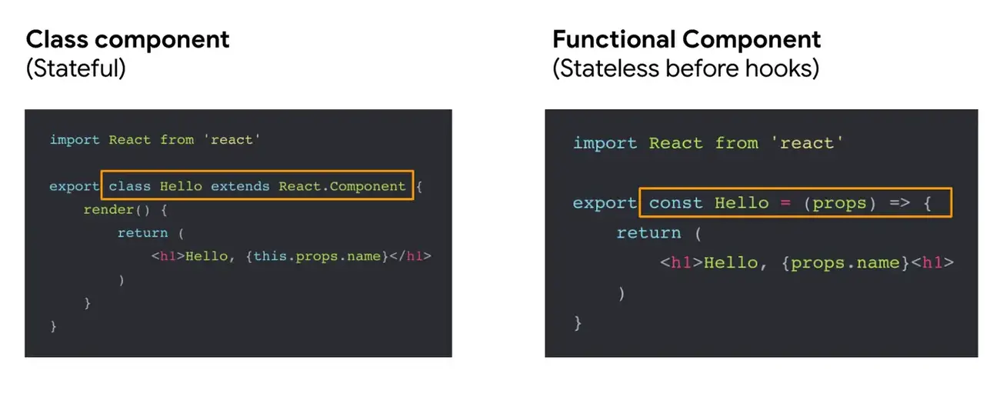
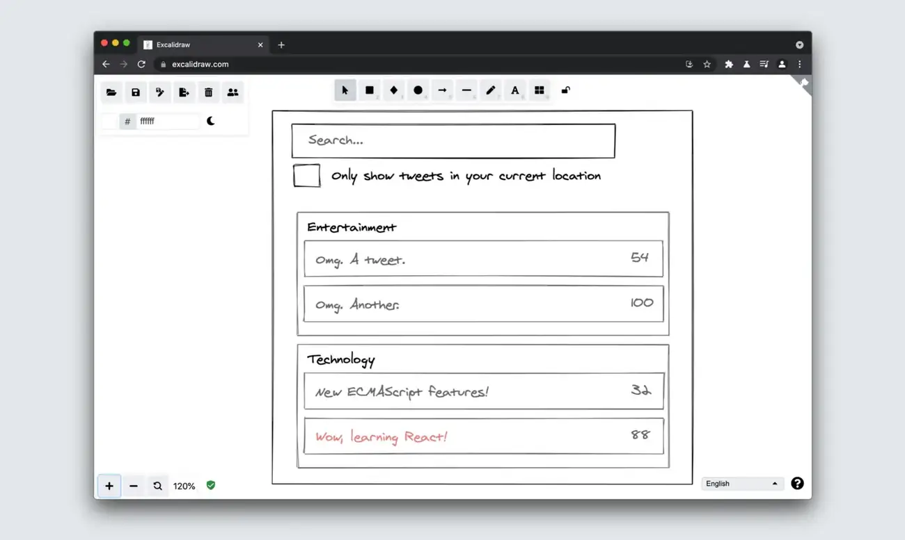
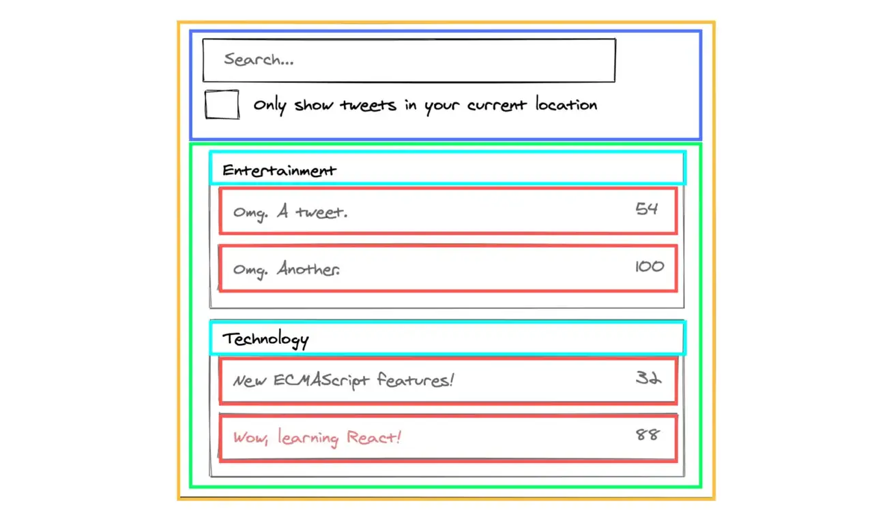

أنماط React وNext.js
نظرة عامة على React.js
على مر السنين، تضاعف الطلب على طرق مباشرة لتركيب واجهات المستخدم باستخدام JavaScript. صُمّم React، ويُشار إليه أيضًا بـReact.js، ليكون مكتبة JavaScript مفتوحة المصدر من تطوير Facebook، ويُستخدم لبناء واجهات المستخدم أو مكوّنات واجهة المستخدم.
React ليس بالطبع مكتبة واجهة المستخدم الوحيدة. فـPreact وVue وAngular وSvelte وLit وكثير غيرها ممتازة أيضًا لتركيب الواجهات من عناصر قابلة لإعادة الاستخدام. ونظرًا لشعبية React، يستحق الأمر أن نستعرض كيف يعمل، وسنستخدمه لشرح بعض أنماط التصميم (patterns) والعرض والأداء في هذا الدليل.
عندما يتحدث مطوّرو الواجهة الأمامية (front-end) عن الشيفرة، فغالبًا ما يكون ذلك في سياق تصميم واجهات للويب. ونفكر في تركيب الواجهات على هيئة عناصر، مثل الأزرار والقوائم والتنقل وما شابه. توفر React طريقة محسّنة ومبسّطة للتعبير عن الواجهات بهذه العناصر. كما تساعد على بناء واجهات معقدة وصعبة、التصميم من خلال تنظيم الواجهة في ثلاثة مفاهيم رئيسية: المكوّنات والخصائص (props) والحالة (state).
ولأن React يركّز على التركيب، يمكنه مطابقة عناصر نظام التصميم لديك بدقة. وبذلك، فإن التصميم من أجل React يكافئك في التفكير بطريقة معيارية. فهو يتيح لك تصميم المكوّنات الفردية قبل تجميع صفحة أو عرض، لتفهم نطاق كل مكوّن وغرضه تمامًا، وهي عملية تسمى التجميع المعتمد على المكوّنات (componentization).
المصطلحات التي سنستخدمها
- React / React.js / ReactJS - مكتبة React، التي أنشأتها Facebook عام 2013
- ReactDOM - الحزمة الخاصة بـDOM والعرض على الخادم
- JSX - امتداد بناء جملة لـJavaScript
- Redux - حاوية حالة مركزية
- الخطافات (hooks) - طريقة جديدة لاستخدام الحالة وميزات React الأخرى من دون كتابة أصناف
- ReactNative - المكتبة لتطوير تطبيقات أصلية عبر الأنظمة باستخدام Javascript
- Webpack - حازم وحدات JavaScript، شائع في مجتمع React.
- CRA (Create React App) - أداة CLI لإنشاء هيكل تطبيق React بغرض بدء المشروع.
- Next.js - إطار عمل (framework) في React يضم أفضل الميزات من فئات متعددة، بما فيها SSR وتقسيم الشيفرة وتحسين الأداء وغيرها.
العرض باستخدام JSX
سنستخدم JSX في عدد من أمثلتنا. JSX امتداد لـJavaScript يضم HTML القالبية داخل JavaScript باستخدام اصطلاحات شبيهة بـXML. يُقصد تحويله إلى JavaScript صالح، مع أن دلالات هذا التحويل تعتمد على التنفيذ. اكتسبت JSX شهرتها مع مكتبة React، لكن ظهرت لها منذ ذلك الحين تنفيذات أخرى أيضًا.

المكوّنات والخصائص والحالة
المكوّنات والخصائص والحالة هي المفاهيم الأساسية الثلاثة في React. ويمكن تصنيف كل ما ستراه أو ستفعله في React تقريبًا ضمن واحد أو أكثر من هذه المفاهيم الأساسية، وفيما يلي نظرة سريعة عليها:
1. المكوّنات

المكوّنات هي لبنات البناء في أي تطبيق React. وهي أشبه بدوال JavaScript تقبل إدخالًا عشوائيًا (Props) وتعيد عناصر React التي تصف ما ينبغي عرضه على الشاشة.
أول ما ينبغي فهمه هو أن كل شيء على الشاشة في تطبيق React هو جزء من مكوّن. وبعبارة جوهرية، تطبيق React مجرد مكوّنات داخل مكوّنات داخل مكوّنات. لذلك لا يبني المطوّرو الصفحات في React، بل المكوّنات.
تتيح لك المكوّنات تقسيم واجهة المستخدم إلى أجزاء مستقلة قابلة لإعادة الاستخدام. إن كنت معتادًا على تصميم الصفحات، فقد يبدو التفكير بهذه الطريقة المعيارية تغييرًا كبيرًا. لكن إن كنت تستخدم نظام تصميم أو دليل أنماط؟ فقد لا يكون تحول الأيديولوجية هذا بحجم ما يبدو.
الطريقة المباشرة لتعريف مكوّن هي كتابة دالة JavaScript.
function Badge(props) {
return <h1>Hello, my name is {props.name}</h1>;
}
هذه الدالة مكوّن React صالح لأنها تقبل وسيطًا واحدًا من نوع كائن الخصائص (properties) يحتوي على البيانات، وتعيد عنصر React. تسمى هذه المكوّنات مكوّنات دالية لأنها حرفيًا دوال JavaScript.

إلى جانب المكوّنات الدالية، يوجد نوع آخر من المكوّنات هو المكوّنات الصنفية. ويختلف المكوّن الصنفي عن المكوّن الدالي في أنه يُعرّف بواسطة صنف ES6، كما هو ظاهر أدناه:
class Badge extends React.Component {
render() {
return <h1>Hello, my name is {this.props.name}</h1>;
}
}
ملاحظة (React 18+): لا تزال المكوّنات الصنفية تعمل، لكن React الحديث (v16.8+، وخاصة React 18+) يوصي باستخدام المكوّنات الدالية مع الخطافات في الشيفرة الجديدة. المكوّنات الدالية أبسط، وتتجنب تعقيد
thisوطرق دورة الحياة، وتعمل بسلاسة مع الميزات الجديدة مثل مصرّف React والعرض المتزامن. وتنص وثائق React صراحةً على عدم توصية باستخدام المكوّنات الصنفية في الشيفرة الجديدة.
استخراج المكوّنات
لبيان أن المكوّنات يمكن فصلها إلى مكوّنات أصغر، ضع المكوّن Tweet التالي في الحسبان:

ويمكن تنفيذه على النحو التالي:
function Tweet(props) {
return (
<div className="Tweet">
<div className="User">
<Image
className="Avatar"
src={props.author.avatarUrl}
alt={props.author.name}
/>
<div className="User-name">{props.author.name}</div>
</div>
<div className="Tweet-text">{props.text}</div>
<Image
className="Tweet-image"
src={props.image.imageUrl}
alt={props.image.description}
/>
<div className="Tweet-date">{formatDate(props.date)}</div>
</div>
);
}
قد يكون التعامل مع هذا المكوّن صعبًا بعض الشيء بسبب تكدّس محتواه، وقد تكون إعادة استخدام أجزاءه الفردية صعبة أيضًا. لكننا ما زلنا نستطيع استخراج بعض المكوّنات منه.
أول ما سنفعله هو استخراج Avatar:
function Avatar(props) {
return (
<Image
className="Avatar"
src={props.user.avatarUrl}
alt={props.user.name}
/>
);
}
لا يحتاج Avatar إلى معرفة أنه يُعرض داخل Comment. لهذا السبب اخترنا لخصيته اسمًا أكثر عمومية: user بدلًا من author.
الآن سنبسّط التعليق قليلًا:
function Tweet(props) {
return (
<div className="Tweet">
<div className="User">
<Avatar user={props.author} />
<div className="User-name">{props.author.name}</div>
</div>
<div className="Tweet-text">{props.text}</div>
<Image
className="Tweet-image"
src={props.image.imageUrl}
alt={props.image.description}
/>
<div className="Tweet-date">{formatDate(props.date)}</div>
</div>
);
}
الأمر التالي الذي سنفعله هو إنشاء مكوّن User يعرض Avatar بجوار اسم المستخدم:
function User(props) {
return (
<div className="User">
<Avatar user={props.user} />
<div className="User-name">{props.user.name}</div>
</div>
);
}
الآن سنبسّط Tweet أكثر:
function Tweet(props) {
return (
<div className="Tweet">
<User user={props.author} />
<div className="Tweet-text">{props.text}</div>
<Image
className="Tweet-image"
src={props.image.imageUrl}
alt={props.image.description}
/>
<div className="Tweet-date">{formatDate(props.date)}</div>
</div>
);
}
يبدو استخراج المكوّنات مهمة مملة، لكن المكوّنات القابلة لإعادة الاستخدام تجعل الأمور أسهل عند البرمجة للتطبيقات الأكبر. ومن المعايير الجيدة التي يمكن وضعها في الحسبان عند تبسيط المكوّنات: إذا استُخدم جزء من واجهة المستخدم عدة مرات (Button أو Panel أو Avatar)، أو كان معقدًا بما يكفي في حد ذاته (App أو FeedStory أو Comment)، فإنه مرشّح جيد لاستخراجه إلى مكوّن منفصل.
2. الخصائص (props)
الخصائص (props) اختصار لكلمة properties، وهي تشير ببساطة إلى البيانات الداخلية للمكوّن في React. تُكتب داخل استدعاءات المكوّنات وتُمرّر إليها. كما تستخدم الصيغة نفسها المستخدمة في سمات HTML، مثل prop=“value”. وهناك أمران يستحقان التذكر بشأن الخصائص: أولًا، نحدّد قيمة الخاصية ونستخدمها كجزء من المخطط قبل بناء المكوّن. ثانيًا، لا تتغير قيمة الخاصية أبدًا، أي أن الخصائص للقراءة فقط بعد تمريرها إلى المكوّنات.
تصل إلى الخاصية بالإشارة إليها عبر الخاصية this.props التي يمكن لكل مكوّن الوصول إليها.
3. الحالة
الحالة كائن يحتوي على معلومات قد تتغير طوال عمر المكوّن. أي أنها لقطة حالية من البيانات المخزنة في خصائص المكوّن. ويمكن للبيانات أن تتغير بمرور الوقت، لذا تصبح تقنيات إدارة طريقة تغير تلك البيانات ضرورية لضمان ظهور المكوّن على النحو الذي يريده المهندسون في الوقت المناسب تمامًا، وهذا ما يُسمى إدارة الحالة (state management).

يكاد يكون من المستحيل قراءة فقرة عن React دون المرور بفكرة إدارة الحالة. يحب المطوّرين التوسع في هذا الموضوع، لكن جوهر الأمر هو أن إدارة الحالة ليست معقدة بقدر ما تبدو.
في React، يمكن تتبع الحالة عالميًا أيضًا، ويمكن مشاركة البيانات بين المكوّنات عند الحاجة. وبعبارة جوهرية، هذا يعني أن تحميل البيانات في أماكن جديدة داخل تطبيقات React ليس مكلفًا كما هو مع التقنيات الأخرى. ف تطبيقات React أذكى بشأن البيانات التي تحفظها وتحملها ومتى تفعل ذلك. وهذا يتيح فرصًا لبناء واجهات تستخدم البيانات بطرق جديدة.
تخيل مكوّنات React تطبيقاتًا مصغرة لكل منها بياناتها ومنطقها وعرضها. ينبغي أن يكون لكل مكوّن غرض واحد. وبصفتك مهندسًا، أنت من يقرّر ذلك الغرض وتتحكم تحكمًا كاملًا في كيفية سلوك كل مكوّن والبيانات المستخدمة. لم تعد مقيدًا ببيانات بقية الصفحة. وفي تصميمك، يمكنك الاستفادة من ذلك بطرق متعددة. هناك فرص لعرض بيانات إضافية يمكنها تحسين تجربة المستخدم أو جعل أجزاء من التصميم أكثر سياقًا.
كيفية إضافة الحالة في React
عند التصميم، أجّل تضمين الحالة إلى المرحلة الأخيرة. من الأفضل تصميم كل شيء خاليًا من الحالة بقدر الإمكان، باستخدام الخصائص والأحداث. يجعل هذا المكوّنات أسهل في الصيانة والاختبار والفهم. وينبغي أن تتم إضافة الحالات إمّا عبر حاويات حالة مثل Redux وMobX، أو عبر مكوّن حاوية/غلاف. وRedux نظام شائع لإدارة الحالة في أطر العمل التفاعلية الأخرى. فهو ينفّذ آلة حالة مركزية تعمل بالأفعال.
ملاحظة (React 18+): في React الحديث، تدير تطبيقات كثيرة الحالة عبر السياق والخطافات، مثل
useReducerوuseContext، أو مكتبات خفيفة الوزن مثل Zustand وJotai للحالات البسيطة. ويظل Redux صالحًا للحالة العالمية المعقدة، لكن الحلول المدمجة في React غالبًا ما تكفي للحالة المحلية أو المشتركة. ويجعل التجميع التلقائي في React 18 وتحسينات مصرّف React إدارة تحديثات الحالة أكثر كفاءة من دون مكتبات إضافية في كثير من السيناريوهات.

في المثال أدناه، يمكن أن يكون موضع الحالة هو LoginContainer نفسه. فلنستخدم خطافات React (hooks) لهذا الغرض، وسنناقشها في القسم التالي:
const LoginContainer = () => {
const [username, setUsername] = useState("");
const [password, setPassword] = useState("");
const login = async (event) => {
event.preventDefault();
const response = await fetch("/api", {
method: "POST",
body: JSON.stringify({
username,
password,
}),
});
// Here we could check response.status to login or show error
};
return (
<LoginForm onSubmit={login}>
<FormInput
name="username"
title="Username"
onChange={(event) => setUsername(event.currentTarget.value)}
value={username}
/>
<FormPasswordInput
name="password"
title="Password"
onChange={(event) => setPassword(event.currentTarget.value)}
value={password}
/>
<SubmitButton>Login</SubmitButton>
</LoginForm>
);
};
لمزيد من الأمثلة مثل ما سبق، راجع التفكير في React 2020.
الخصائص مقابل الحالة
قد يُخلط بين الخصائص والحالة أحيانًا بسبب تشابههما. وفيما يلي بعض الفروق الرئيسية بينهما:
| الخصائص | الحالة |
|---|---|
| تبقى البيانات دون تغيير من مكوّن إلى آخر. | البيانات هي لقطة حالية من البيانات المخزنة في خصائص المكوّن، وتتغير خلال دورة حياة المكوّن. |
| البيانات للقراءة فقط | يمكن أن تكون البيانات غير متزامنة |
| لا يمكن تعديل البيانات الموجودة في الخصائص | يمكن تعديل البيانات الموجودة في الحالة باستخدام this.setState |
| الخصائص هي ما يُمرَّر إلى المكوّن | تُدار الحالة داخل المكوّن |
مفاهيم أخرى في React
المكوّنات والخصائص والحالة هي المفاهيم الأساسية الثلاثة لكل ما ستفعله في React. لكن هناك مفاهيم أخرى ينبغي تعلمها:
1. دورة الحياة
يمر كل مكوّن React بثلاث مراحل: التركيب، والعرض، وفك التركيب. ويمكن الإشارة إلى سلسلة الأحداث التي تحدث خلال هذه المراحل الثلاث إلى دورة حياة المكوّن. ورغم أن هذه الأحداث ترتبط جزئيًا بحالة المكوّن (بياناته الداخلية)، فإن دورة الحياة شيء مختلف بعض الشيء. تحتوي React على شيفرة داخلية تحمّل المكوّنات وتفكّها عند الحاجة، وقد يوجد المكوّن في عدة مراحل استخدام داخل تلك الشيفرة الداخلية.
توجد طرق كثيرة لدورة الحياة، لكن أكثرها شيوعًا هي:
render() - هذه الدالة هي الدالة الوحيدة المطلوبة داخل المكوّن الصنفي في React، وهي الأكثر استخدامًا. وكما يوحي اسمها، فهي تتولى عرض المكوّن في واجهة المستخدم، وتحدث أثناء تركيب المكوّن وعرضه.
عندما يُنشأ المكوّن أو يُزال:
componentDidMount()تعمل بعد عرض ناتج المكوّن في DOM.componentWillUnmount()تُستدعى مباشرةً قبل فك تركيب المكوّن وتدميره
عندما تتحدث الخصائص أو الحالات:
shouldComponentUpdate()تُستدعى قبل العرض عند استلام خصائص أو حالة جديدة.componentDidUpdate()تُستدعى مباشرةً بعد حدوث التحديث. ولا تُستدعى هذه الدالة عند العرض الأولي.
2. المكوّن من رتبة عليا (HOC)
المكوّنات من رتبة عليا (HOC) هي تقنية متقدمة في React لإعادة استخدام منطق المكوّنات. أي أن المكوّن من رتبة عليا دالة تأخذ مكوّنًا وتعيد مكوّنًا جديدًا. وهي أنماط تنبع من الطبيعة التركيبية لـReact. وفي حين يحوّل المكوّن الخصائص إلى واجهة مستخدم، يحوّل المكوّن من رتبة عليا مكوّنًا إلى مكوّن آخر، وتحظى هذه التقنية عادةً بالشعبية في مكتبات الطرف الثالث.
3. السياق
في تطبيق React النموذجي، تُمرَّر البيانات عبر الخصائص، لكن هذا قد يكون مرهقًا لبعض أنواع الخصائص التي تحتاج إليها مكونات كثيرة داخل التطبيق. ويوفر السياق طريقة لمشاركة هذه الأنواع من البيانات بين المكوّنات من دون تمرير خاصية عبر كل مستوى من التسلسل الهرمي. أي أننا مع السياق نستطيع تجنب تمرير الخصائص عبر العناصر الوسيطة.
خطافات React
الخطافات (hooks) هي دوال تتيح لك «الانضمام إلى» ميزات حالة React ودورة الحياة من المكوّنات الدالية. وتتيح لك استخدام الحالة وميزات React الأخرى من دون كتابة صنف. ويمكنك التعلم المزيد عنها في دليل الخطافات.

التفكير في React
أمر مذهل حقًا في React هو كيف يجعلك تفكر في التطبيقات أثناء بنائها. في هذا القسم، سنرشدك إلى عملية التفكير في بناء جدول بيانات منتجات قابل للبحث باستخدام خطافات React.
الخطوة 1: ابدأ بنموذج أولي (mock) تخيّل أننا لدينا بالفعل واجهة API بصيغة JSON ونموذج أولي لواجهتنا:

تعيد واجهة JSON بعض البيانات التي تبدو هكذا:
[
{
category: "Entertainment",
retweets: "54",
isLocal: false,
text: "Omg. A tweet.",
},
{
category: "Entertainment",
retweets: "100",
isLocal: false,
text: "Omg. Another.",
},
{
category: "Technology",
retweets: "32",
isLocal: false,
text: "New ECMAScript features!",
},
{
category: "Technology",
retweets: "88",
isLocal: true,
text: "Wow, learning React!",
},
];
نصيحة: قد تجد أدوات مجانية مثل Excalidraw مفيدة لرسم نموذج أولي عالي المستوى لواجهة المستخدم ومكوّناتك.
الخطوة 2: قسّم واجهة المستخدم إلى مكوّن هرمي
بعد أن يكون لديك النموذج الأولي، الخطوة التالية هي رسم مربعات حول كل مكوّن (ومكوّن فرعي) في النموذج وتسميتها جميعًا، كما هو ظاهر أدناه.
استخدم مبدأ المسؤولية المفردة: ينبغي أن يكون لكل مكوّن وظيفة واحدة في الأفضل. وإذا اتسع، فينبغي تقسيمه إلى مكوّنات فرعية أصغر. واستخدم التقنية نفسها لتقرّر ما إذا كان ينبغي لك إنشاء دالة أو كائن جديد.

سترى في الصورة أعلاه أن لدينا خمسة مكونات في تطبيقنا. وقد عددنا البيانات التي يمثلها كل مكوّن.
- TweetSearchResults (برتقالي): حاوية المكوّن الكامل
- SearchBar (أزرق): إدخال المستخدم لما يريد البحث عنه
- TweetList (أخضر): يعرض التغريدات ويصفيها وفق إدخال المستخدم
- TweetCategory (فيروزي): يعرض عنوانًا لكل فئة
- TweetRow (أحمر): يعرض صفًا لكل تغريدة
بعد تحديد المكوّنات في النموذج الأولي، تتمثل الخطوة التالية في ترتيبها في تسلسل هرمي. وينبغي أن تظهر المكوّنات الموجودة داخل مكوّن آخر في النموذج كأبناء في التسلسل الهرمي. مثل هذا:
- TweetSearchResults SearchBar
- TweetList TweetCategory
- TweetRow
الخطوة 3: نفّذ المكوّنات في React بعد إكمال التسلسل الهرمي للمكوّنات، تتمثل الخطوة التالية في تنفيذ تطبيقك. قبل العام الماضي، كانت أسرع طريقة هي بناء نسخة تأخذ نموذج بياناتك وتعرض واجهة المستخدم، لكن من دون أي تفاعل. ومنذ إدخال خطافات React، أصبحت طريقة أسهل لتنفيذ تطبيقك هي استخدام الخطافات كما هو ظاهر أدناه:
i. قائمة تغريدات قابلة للتصفية
const TweetSearchResults = ({ tweets }) => {
const [filterText, setFilterText] = useState("");
const [inThisLocation, setInThisLocation] = useState(false);
return (
<div>
<SearchBar
filterText={filterText}
inThisLocation={inThisLocation}
setFilterText={setFilterText}
setInThisLocation={setInThisLocation}
/>
<TweetList
tweets={tweets}
filterText={filterText}
inThisLocation={inThisLocation}
/>
</div>
);
};
ii. SearchBar
const SearchBar = ({
filterText,
inThisLocation,
setFilterText,
setInThisLocation,
}) => (
<form>
<input
type="text"
placeholder="Search..."
value={filterText}
onChange={(e) => setFilterText(e.target.value)}
/>
<p>
<label>
<input
type="checkbox"
checked={inThisLocation}
onChange={(e) => setInThisLocation(e.target.checked)}
/>{" "}
Only show tweets in your current location
</label>
</p>
</form>
);
iii. قائمة التغريدات (قائمة التغريدات)
const TweetList = ({ tweets, filterText, inThisLocation }) => {
const rows = [];
let lastCategory = null;
tweets.forEach((tweet) => {
if (tweet.text.toLowerCase().indexOf(filterText.toLowerCase()) === -1) {
return;
}
if (inThisLocation && !tweet.isLocal) {
return;
}
if (tweet.category !== lastCategory) {
rows.push(
<TweetCategory category={tweet.category} key={tweet.category} />
);
}
rows.push(<TweetRow tweet={tweet} key={tweet.text} />);
lastCategory = tweet.category;
});
return (
<table>
<thead>
<tr>
<th>Tweet Text</th>
<th>Retweets</th>
</tr>
</thead>
<tbody>{rows}</tbody>
</table>
);
};
iv. صف فئة التغريدة
const TweetCategory = ({ category }) => (
<tr>
<th colSpan="2">{category}</th>
</tr>
);
v. صف التغريدة
const TweetRow = ({ tweet }) => {
const color = tweet.isLocal ? "inherit" : "red";
return (
<tr>
<td>
<span style="">{tweet.text}</span>
</td>
<td>{tweet.retweets}</td>
</tr>
);
};
سيكون التنفيذ النهائي هو كامل الشيفرة السابقة مجتمعة وفق التسلسل الهرمي المذكور:
- TweetSearchResults SearchBar
- TweetList TweetCategory
- TweetRow
البداية
توجد طرق متعددة لبدء استخدام React.
التحميل مباشرةً في صفحة الويب: هذه أبسط طريقة لإعداد React. أضف JavaScript الخاص بـReact إلى صفحتك، سواء كاعتمادية npm أو عبر CDN.
استخدام create-react-app: مشروع create-react-app يهدف إلى تمكينك من استخدام React في أقرب وقت ممكن، وأي تطبيق React يحتاج إلى تجاوز صفحة واحدة سيجد أن create-react-app يفي بهذا الاحتياج بسهولة تامة. وينبغي لتطبيقات الإنتاج الجادة أن تفكر في استخدام Next.js لأن له افتراضات أقوى، مثل تقسيم الشيفرة، مدمجة فيه.
Code Sandbox: طريقة سهلة للحصول على بنية create-react-app من دون تثبيتها، هي الذهاب إلى https://codesandbox.io/s واختيار «React».
Codepen: إذا كنت تبني نموذجًا أوليًا لمكوّن React وتستمتع باستخدام Codepen، فهناك أيضًا عدد من نقاط بداية React يمكنك استخدامها.
الخاتمة
صُممت مكتبة React.js لجعل عملية بناء مكوّنات واجهة المستخدم المعيارية والقابلة لإعادة الاستخدام بسيطة وبديهية. ونأمل أن تكون هذه المقدمة المختصرة مفيدة بوصفها نظرة عامة عالية المستوى.
إذا كنت مهتمًا بمزيد من القراءة عن أساسيات React، فراجع:
لن يكون هذا الدليل ممكنًا لولا أساليب التدريس التي تُشاركها الوثائق الرسمية لمكوّنات React وخصائصها، والتفكير في React، والتفكير في خطافات React، ووثائق scriptverse.